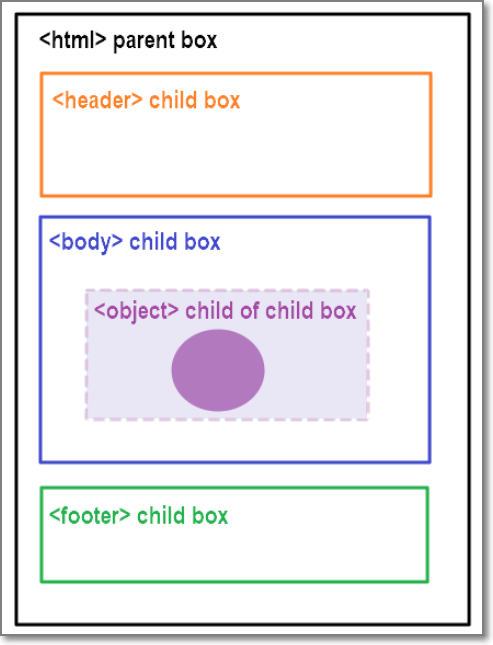
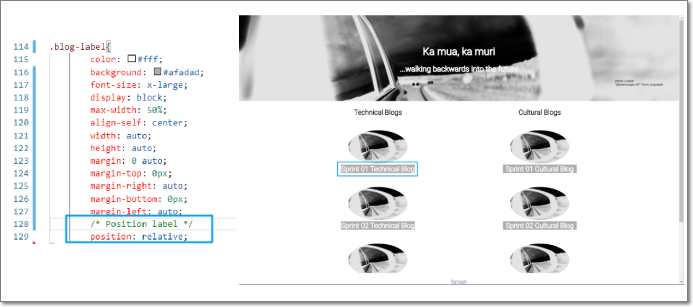
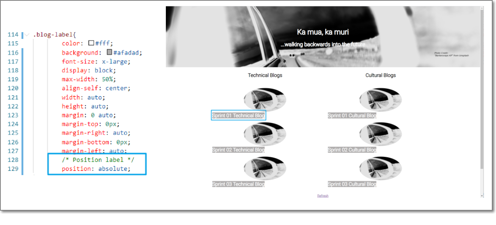
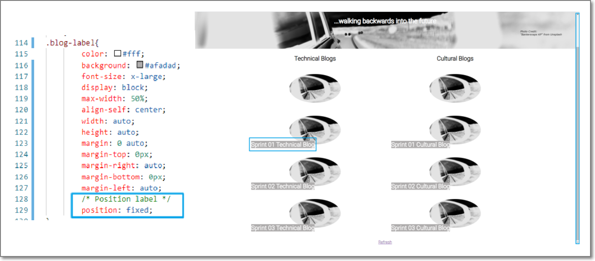

Sprint-02 Technical Blog
03rd September 2020
One of the things I found difficult with the Sprint 02 challenges was having content where I wanted it to appear on a webpage, particularly if the webpage was resized. I had real trouble with this especially with items overlaping each other and links being unable to be accessed as they were "blocked" by another object. As such I decided to investigate positioning. After researching this topic, I am itching to re-write parts of my pages to incorporate it - as it is now making sense!
The first concept that really helped me was one that is covered well in the Udacity Tutorials about the concept of everything on a webpage being a "box" and having lots of boxes within boxes (even circles are boxes!). The second concept to help me in my understanding of positioning was the concept of parent and child objects. A child object (or "element") lives within a parent object and will be positioned according to what the properties of the parent object are.
|  |
|---|
If we consider the HTML element to be the parent box on a webpage like the image above and everything else on the page lives within the HTML box and are "children" of the HTML element. To understand why positioning is important there is a need to understand that there are defaults that the webpage will automatically apply because HTML is being used. These defaults need to be reset or "overridden" to position objects where you want to see them. HTML elements are static by default and will remain that way unless their "position" is defined. The best way to define this positioning is in the CSS (Cascading Style Sheet).
The first instruction I will try to explain is that of position: relative;
. The "relative" position of an element is the position of the element relative to where it would normally be located on the page. It is then moved (offset) relative to itself based on the values of top, bottom (vertical offset), right and left (horizontal offset).
One thing to note is the position is it always measured from the edge of one element to the edge or corner of another. For example if we talk about a "top: 15px;" being defined then the top of the child object will be pushed down 15px from the edge of the parent object. In contrast if the "bottom: 30px;" is defined then the bottom of the object will be pushed up from the edge of the parent object.
|  |
|---|
Setting the position: absolute;
means the element is removed from the normal document flow of positioning elements on the page and its position is determined relative to the closest positioned parent or ancestor. If an absolute positioned element has no positioned ancestors, it will use the document body, and will move with page scrolling.
|  |
|---|
The position: fixed;
is one that I have seen on many web pages and seems to be in fashion at the moment. This means that the element does not move when the page is scrolled. I can see there is a need to be careful of this as it can block other elements like links etc if it is not used carefully.
|  |
|---|
| References: |
|---|
| 1. GitHub Article |
| 2. Mozilla Article |
| 3. CSS Tricks Article |
| 4. W3Schools Article |